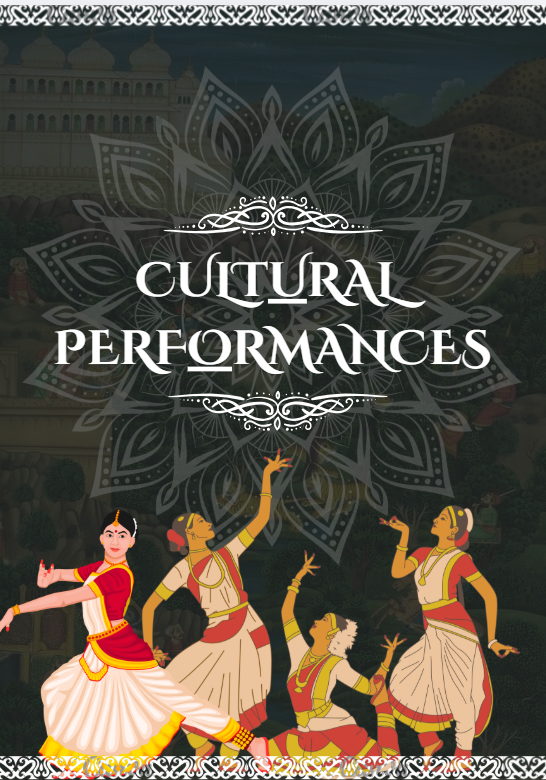

Announcement Post
Announcement of New Secretariats of SOA English Cafe
Fun typography with caraousel-like layout, with vintage aesthetic to match the nostalgic tone of the announcement.
Check Out →A curated selection of design + copy experiments. Filter by vibe, then open a card for its story.
Fun typography with caraousel-like layout, with vintage aesthetic to match the nostalgic tone of the announcement.
Check Out →
Announcement for the the winners of the event conducted by SOA English Cafe under the umbrella of Chakravyuh x Genesis 2k26.
Check Out →
Minimal design for the Sustainable Health newsletter by SOA English Cafe, with a focus on readability and visual hierarchy to enhance the storytelling experience.
Check Out →